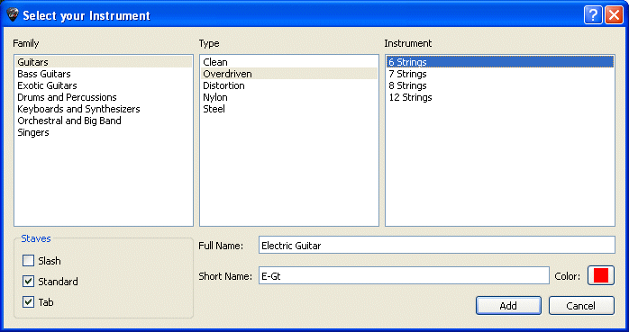

Spuren hinzufügen
Guitar Pro kann eine unbegrenzte Anzahl von Spuren gleichzeitig verwalten
(die Grenzen sind die von Ihrer Hardware) Die Wahl des Instrumentes bestimmt
die Art des Notensystems (Grand Staff Piano, Gitarren-Tabulatur, etc.
...) Sie bestimmt auch die Stimmlage des Instruments. Noten aus dem Pitch-Bereich
kõnnen in rot angezeigt werden, siehe Stylesheet
(Layout-Datei).)
Um eine neue Spur hinzufügen, benutzen Sie im Menü Spur
> hinzufügen oder klicken Sie auf das Symbol über
dem Mischpult.

Das Fenster Instrument-Auswahl
õffnet sich, und Sie kõnnen dann die verschiedenen Parameter der Spur
einstellen :
Wählen Sie in drei Schritten das ausgewählte Instrument
(Familie, Art und Instrument) aus.
Standard-Notenschrift Ansicht.
Tabulatur-Ansicht (für Saiteninstrumente).
Rhythmische Slashes Ansicht (für Saiteninstrumenten).
Der vollständige Name erscheint vor dem ersten
System.
Die Abbkürzung erscheint vor den anderen Systemen
(nach den Einstellungen des Stylesheet).
Die Farbe, die Sie in der gesamtansicht benutzen
sollen
Die Audioeinstellugen der Spur kõnnen Sie in Welt:
Instrument und Audio einstellen.
Leere Takte werden automatisch in der neuen zugefügten Spur erstellt.
Denn in Guitar Pro hat jede Spur genau die gleiche Anzahl an Takten, damit
der musikalische Zusammenhang erhalten wird.
Um eine Spur zu lõschen, gehen Sie ins Menü Spur > Lõschen oder benutzen
Sie den Knopf .
Um eine Spur zu verschieben,
gehen Sie in den Menüs Spur > Nach oben/unten verschieben oder benutzen
Sie die Knõpfe .
 Hinweis:
Wenn Sie das Instrument ausgewählt haben, ist es unmõglich dieses Instrument
für diese Spur zu ändern (insbesondere die Anzahl an Saiten kann nicht
geändert werden), aber es ist mõglich dank des Ausschneiden/Kopieren/Einfügen),
ein Instrument in ein anderes zu konvertieren, da die Transposition dann
automatisch erfolgt. Man kann auch die Bank ändern und irgendeinem Instrument
eine Bank zuordnen (außer Drums).
Hinweis:
Wenn Sie das Instrument ausgewählt haben, ist es unmõglich dieses Instrument
für diese Spur zu ändern (insbesondere die Anzahl an Saiten kann nicht
geändert werden), aber es ist mõglich dank des Ausschneiden/Kopieren/Einfügen),
ein Instrument in ein anderes zu konvertieren, da die Transposition dann
automatisch erfolgt. Man kann auch die Bank ändern und irgendeinem Instrument
eine Bank zuordnen (außer Drums).